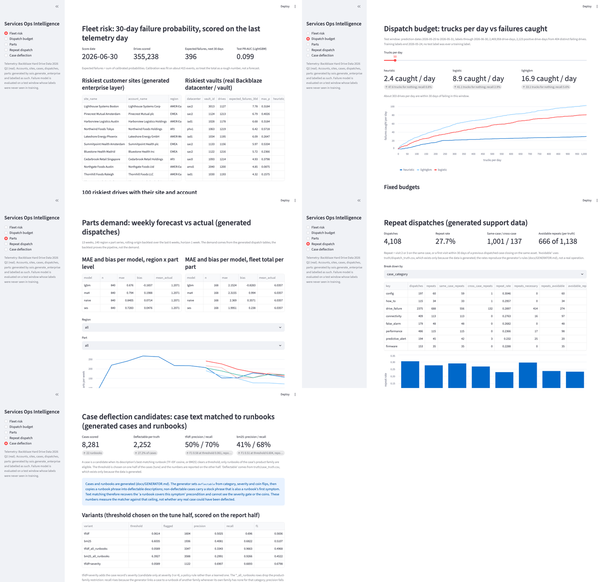

Predictive support and parts forecasting for an installed base of hardware, built the way a Services Operations team would use it.
scripts/build_site.py reads reports/ and docs/memo.md and writes the JSON the charts draw from. The Streamlit dashboard and Postgres do not run on Vercel. Run the dashboard locally with make dashboard from a clone (it reads reports/ only, no data download needed).Three rankings of the same drive-days. The Backblaze rule flags a drive when any of SMART 5, 187, 188, 197 or 198 is above zero.
reports/failure_model_metrics.json, lightgbm_feature_importance_gain
Each day the top B drives by score get a truck. "Caught" is a truck that reached a drive failing within 30 days, "for nothing" a truck that did not. Mean over the 7 test days.
reports/dispatch_budget_curve.csv (budgets 1 to 1000; every budget to 100, then every 10th). Hover a point for all three rankings; move the slider to read the exact row.
reports/dispatch_budget.csv
Test drive-days in ten equal bins by predicted probability. A calibrated model predicts what it observes. The top bin holds most of the failures.
reports/reliability.csv
Lower is better. Two levels: each region x part series, and fleet totals per part.
reports/parts_forecast_backtest.csv, reports/parts_forecast_summary.json
The demand is generated by the seeded enterprise, so this proves the pipeline and the comparison, not the demand.
reports/repeat_dispatch.csv, dimension = case_category
A repeat is visit 2 or 3 on the same case, or a first visit within 30 days of a previous dispatched case closing on the same asset. The rates reproduce the generator's rules; they are not a finding about any real operation.
Thresholds chosen on the tune half, scored on the report half.
reports/case_deflection_metrics.json
Each point is one threshold. The chosen threshold is the larger marker.
reports/case_deflection_pr_table.csv
The Streamlit app has five pages over reports/. It does not run on Vercel; this is its headless screenshot from make screenshot. Run it with make dashboard.

docs/memo.md, rendered at build time.
Loading the memo.